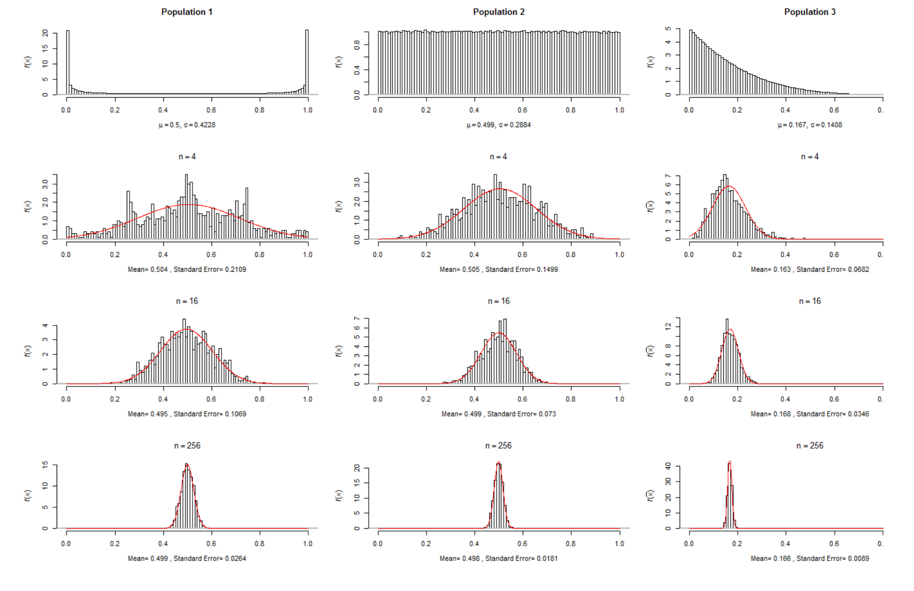
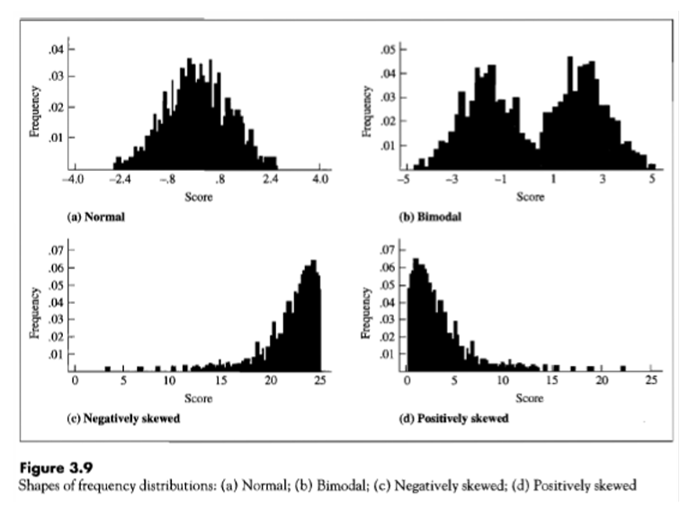
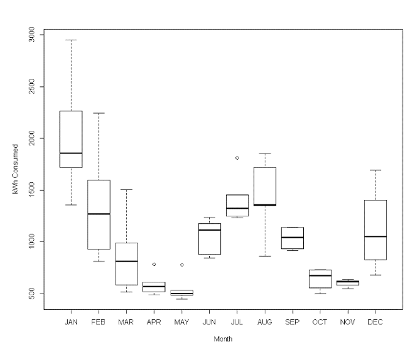
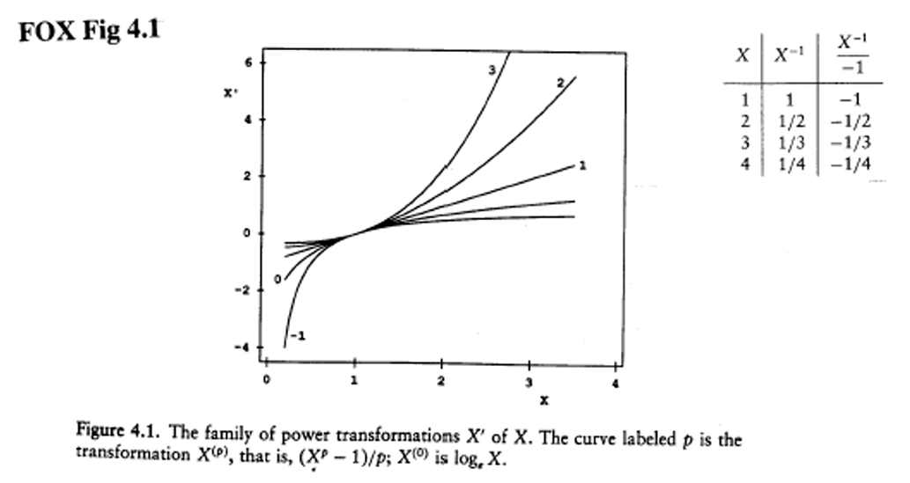
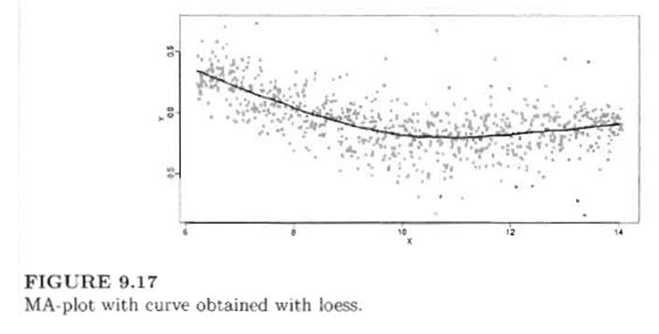
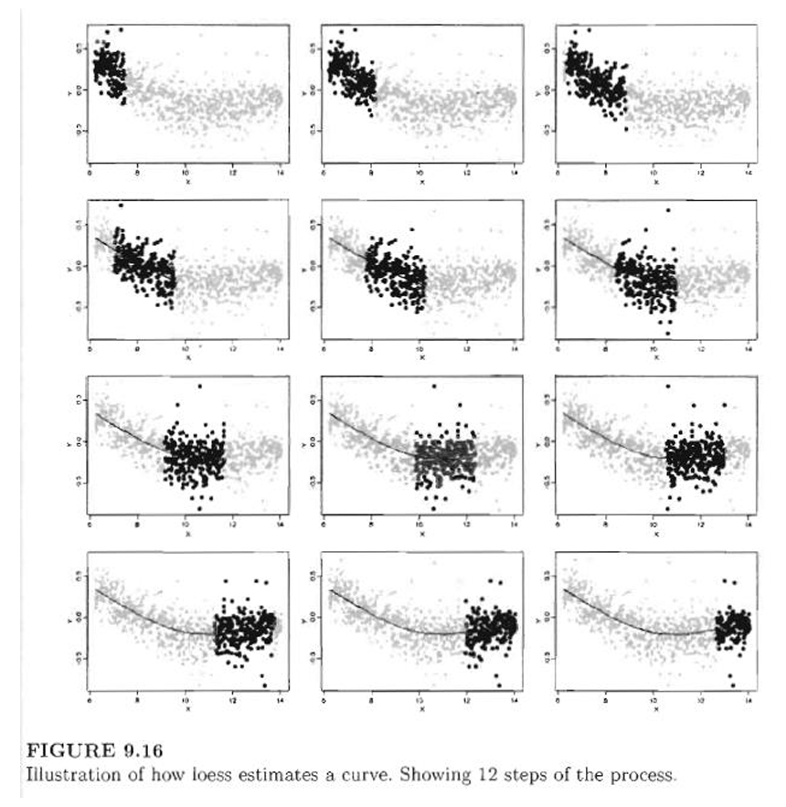

Week01: Hamilton Chapter 1 - Univariate Variable Distributions
1 MOTIVATION FOR HAMILTON CHAPTER 1 (DISCUSSED)
Data analysis fundamental: Treat your data with respect to learn something about the underlying data generating process.
- Data tell a story about the phenomena under investigation.
- Always handle data and analysis results with a critical attitude and use common sense. Link the results back to your original observations.
- Always ask yourself: Do the data or the generated analysis results make sense?
Describing the variability and distribution of a variable is the required first step of any data analysis.
The shape of an univariate distribution can have substantially impact on the outcome of statistical procedures.
E.g.: Outliers or heavy tails may detrimentally influence the outcome of model calibrations and parameter estimations.
Missing to account for the distribution of variables can force a researcher to redo their data analysis later.
Most methods assume symmetricly or preferably normally distributed variables.
Transformations to symmetry are discussed in Chapter 1.
Note: statisticians use many more transformations under particular circumstances.
E.g., we will encounter later the logit-transformation.
1.1 Review: Central Limit Theorem (review, skipped)
Def. Central Limit Theorem: Let \(X_1, X_2, \ldots, X_n\) be a random independent sample of size \(n\) drawn from an arbitrarily distributed population with expectation \(\mu\) and standard deviation \(\sigma\).
Then for large enough sample sizes \(n\), the sampling distribution of the arithmetic mean \(\bar{X}\) is [a] asymptotically (i.e., as the sample size \(n \to \infty\)) normal distributed [b] with
\[ \bar{X} \sim N\left(\mu, \frac{\sigma^2}{n}\right). \]
Proof for independent sample observations \(X_i\):
\[ Var\left(\frac{1}{n} \cdot \sum_{i=1}^{n} X_i\right) = \frac{1}{n^2} \cdot \sum_{i=1}^{n} Var(X_i) = \frac{1}{n^2} \cdot n \cdot \sigma^2 = \frac{\sigma^2}{n} \]
Implications:
- Thus the standard error \(s_{\bar{X}} = \sigma/\sqrt{n}\) of the mean \(\bar{X}\) shrinks by \(1/\sqrt{n}\) with increasing sample size.
- Another implication of the central limit theorem is that the sum of a set of small random errors or shocks will lead to normal distributed total error.
- In contrast, the product of a set of small random errors will lead to a log-normal distributed total error.
Example: Central limit theorem with the R-script CENTRALLIMIT.R:

1.2 Review: The Shape of Distributions (review, skipped)
- Distributions can be distinguished with regards the balance of their left and right tails:
- Symmetric distributions. Tails are balanced into either direction from a central value.
- Negatively skewed distributions (long tail into the negative direction)
- Positively skewed distributions (long tail into the positive direction). These distributions frequently emerge for variables with a binding lower origin (like zero income).
- Extreme skewness may hint at outliers that do not match the rest of the observed data.
- The number of meaningful clusters of observations is described by the term modality:
- Uni-modality refers to just one peak.
- Bi-modality refers to two outstanding peaks
- Multimodality refers to more than two outstanding peaks.
- Multimodality may hint at a heterogeneous underlying data generating process in which the underlying process for observations in the first mode is different for observation in the second mode.

1.3 Review: Quantiles and Percentiles (review, skipped)
Technically, quantiles and percentiles are generated from a sorted list of the original data points \(x_{[1]} \leq x_{[2]} \leq x_{[3]} \leq \cdots \leq x_{[n-1]} \leq x_{[n]}\) where each observations has an assigned rank \(i \in \{1,2,\ldots,n\}\), with \(i = 1\) for the smallest observation and \(i = n\) for the largest observation.
For a give data value \(\mathbf{x}_{[i]}\) the percentile approximates the proportion of sample observations less or equal to \(\mathbf{x}_{[i]}\), that is, their cumulative distribution:
\[ \mathbf{p}_{[i]} = \frac{i - \frac{1}{2}}{n} \approx \mathbf{Pr}(X \leq \mathbf{x}_{[i]}) = \int_0^{\mathbf{x}_{[i]}} f(\mathbf{x}) \cdot d\mathbf{x}. \]
Note that the \(\boldsymbol{\alpha} = \mathbf{0.5}\) of the percentile equation \(p(x_{[i]}) = \frac{i - \alpha}{n + (1 - \alpha) - \alpha}\) has been chosen here.
A quantile is the potentially fictious data value of a distribution, which is associated with a particular percentile value.
Important quantiles are:
- 0.25 quantile also called \(Q_1\) quartile (25 % of the observations are smaller or equal to this quantile value)
- 0.50 quantile also called the median (50 % of the observations are smaller or larger than the given quantile value)
- 0.75 quantile also called \(Q_3\) quartile (75 % of the observations are smaller or equal to this quantile value and 25 % of the observations are larger than this value)
- A measure of spread is the inter-quartile range: \(IQR = Q_3 - Q_1\)
1.4 Review: Box-Plots (review, skipped)
- Construction of the box-plot
Draw a box from \(Q_1\) to \(Q_3\). Mark the median \(\mathbf{Q_2}\) in the center of the box with a line.
Definition of adjacent values \(x_{low}^{adj} = \min(x_{[i]} \in (Q_1, Q_1 - 1.5 \cdot IQR)\) plus \(x_{[i]}\) in dataset\()\) and \(x_{high}^{adj} = \max(x_{[i]} \in (Q_3, Q_3 + 1.5 \cdot IQR)\) plus \(x_{[i]}\) in dataset\()\).
The term \(x \in (a,b)\) means, all \(x\)-values in the interval between \(a\) and \(b\).
Draw the “fences” so they just include the smallest and largest data values \(x_{low}^{adj}\) and \(x_{high}^{adj}\), respectively.
Outliers are in the interval \([1.5 \cdot IQR, 3.0 \cdot IQR]\) starting from \(Q_1\) below or \(Q_3\) above, respectively.
Severe outliers are beyond that range \((> 3.0 \cdot IQR)\)

- Use of box-plots:
- Easy visual description of the distribution of a variable and potential outliers
- Comparison of distributions for several variables side-by-side.
1.5 QUANTILE-NORMAL PLOT (DISCUSSED)
Calculate the theoretical quantiles of a normally distributed random variable \(Y_{[i]}\) (assuming the mean \(\mu\) and the variance \(\sigma^2\) were estimated from the sample data) based on the given sample percentiles \(p_{[i]}\) of the observed variable \(x_{[i]}\).
Quantile-Normal Plot: Plot the theoretical normal distribution quantiles \(Y_{[i]}\) on the abscissa (X-axis) against their matching empirical distribution of \(x_{[i]}\) on the ordinate (Y-axis).
Interpretation: - Diagonal with slope 1 => equal distributions. - Not a straight-line => different shapes.


1.6 REVIEW: PROPERTIES OF ARITHMETIC MEAN (review, skipped)
- Implications of the zero-sum property \(\sum_{i=1}^{n} (Y_i - \bar{Y}) = 0\): Assuming the mean is known, then \(n - 1\) observation can vary freely, whereas we can predict the last observation with certainty.
\[ \begin{aligned} \sum_{i=1}^{n} (Y_i - \bar{Y}) &= 0 \\ \Rightarrow \quad \sum_{i=1}^{n} Y_i &= n \cdot \bar{Y} \\ \Rightarrow \quad Y_n &= n \cdot \bar{Y} - \sum_{i=1}^{n-1} Y_i \end{aligned} \]
That implies that we loose one degree of freedom.
Implication of the least squares property \(\min_{\theta} \sum_{i=1}^{n} (Y_i - \theta)^2 \Rightarrow \theta = \bar{Y}\).
Large deviations have a strong impact on the estimated mean, variance etc. because the large deviations are squared
\(\Rightarrow\) Thus, large deviations pull the mean into their direction.
\(\Rightarrow\) Standard deviations are drastically inflated.
Lacking any other information, the arithmetic mean will become best predictor for the variable under investigation.
The deviations from the mean are the unexplained part or the residuals of the observations, i.e., \(y_i = \bar{y} + \varepsilon_i\).
Definition of total sum of squares: \(TSS = \sum_{i=1}^{n} (Y_i - \bar{Y})^2\) or \(TSS = \sum_{i=1}^{n} Y_i^2 - n \cdot \bar{Y}^2\).
Why is the population variance estimated with \((n-1)\) in the denominator, that is, by \(s^2 = TSS/(n-1)\):
Explanation 1: If we calculate the mean from the sample then there are only \(n - 1\) “degrees of freedom” left because of the zero sum property of the mean.
Explanation 2: The mean is calculated by minimizing the TSS.
Thus the sample mean always fits the observed sample data better than any unobserved but true population expectation \(\mu\).
For the true expectation \(\mu\), the TSS would be slightly larger. That is why the sample TSS needs to be inflated by dividing it by a slight smaller value than \(n\), that is, \(n - 1\).
Standard deviation measures the variation in original units rather than in squared units.
1.7 REVIEW: SKEWNESS (review, skipped)
Why does the distribution of the water consumption in the Concord dataset deviate from the normal distribution?
Reason: Fixed lower bound (negative water consumption impossible).
Skewness and bounded/truncated distributions: For skewed distributions the notion of the center of the distribution (mean) becomes ambiguous and the median may be a better representation of the central tendency in the data.
The skewness is defined by \(skew(X) = \frac{\sum_{i=1}^{n} (x_i - \bar{x})^3}{n \cdot s_X^3}\)
The normal distribution has a skewness of 0.
1.8 BOX-COX TRANSFORMATION (DISCUSSED)
This lecture focuses on the more general Box-Cox transformation (note 11 on page 28 in Hamilton) rather than the slightly simpler power transformation, which is discussed in Hamilton. For both transformations, the general interpretation of the parameter \(\lambda\) does not change.
Causes for extreme observations: [a] skewed distributions, [b] measurement or recoding errors, [c] extreme but feasible events (perhaps not belonging to the population under investigation).
The power-transformation presented in book and the Box-Cox transformation only work for variables whose observations are all larger than zero.
The Box-Cox transformation is a generalization of the power transformation: \(Y = \frac{X^{\lambda} - 1}{\lambda}\) and for \(\lambda = 0\) we get \(y = \ln(x)\).
\(\lambda > 1\) reduce negative skewness, whereas \(\lambda < 1\) reduce positive skewness.
Remember: Positive skewness is very common for variables with a natural bound of zero.
If the power \(\lambda < 0\) then all values are multiplied by a negative number to preserve the natural order of observations because, for example, if \(x_1 < x_2\) then \(x_1^{-1} > x_2^{-1} \Longleftrightarrow \frac{1}{x_1} > \frac{1}{x_2}\). However, \(-x_1^{-1} < -x_2^{-1}\)
This explains the value \(\lambda\) in the denominator of the Box-Cox transformation

- Note: R’s function car::powerTransform() is performing several statistical tests whether a variable either needs to be transformed at all (i.e., neutral \(\lambda = 1\)) or whether a log-transformation (i.e., neutral \(\lambda = 0\)) is sufficient by using the likelihood ratio test (LR) principle:
- The first LR tests the null hypotheses \(H_0: \lambda_{optimal} = 0\). If we cannot reject the null hypothesis then we should tentatively work with a log-transformation to achieve normality/symmetry.
- The second LR tests the null hypotheses \(H_0: \lambda_{optimal} = 1\). If we cannot reject the null hypothesis then we should tentatively work with an untransformed variable because it is approximately symmetric.
- The Wald confidence interval provides the 95% probability range within which the true population transformation parameter \(\lambda\) lies.
1.9 HANDLING TRANSFORMATIONS WITH NEGATIVE DATA VALUES (skipped)
After inspection of the variable’s distribution one can overcome the problem of zero or negative data values by
- adding a constant such as \(\min(X) + \varepsilon\), where \(\varepsilon\) is a small positive number to the variable to make its range solidly positive.
- However, if \(\varepsilon\) is too small, which leads to positive but close to zero values, outliers may be introduced.
- On the other hand, choosing \(\varepsilon\) too large, may make the transformation to normality ineffective.
- The function car::symbox() calculates the offset or start value: “a start will be automatically generated if there are zero or negative values in x, and a warning will be printed; the auto-generated start is the absolute value of the minimum x plus 1 percent of the range of x.
See the ?car::bcPower() and Fox & Weissberg pp 161-162 for the bcnPower transformation family.
A more informed way avoiding some of the problems by just adding a constant is to first transform the data by:
\[ z(X, \gamma) = \frac{(X + \sqrt{X^2 + \gamma^2})}{2} \quad \text{with} \]
The transformation \(z(X, \gamma)\) is monotonic (i.e., if \(x_1 < x_2\) then \(z(x_1, \gamma) < z(x_2, \gamma)\))
For large positive \(X\) relative to \(\gamma\) \((X \gg \gamma)\) the transformation is approximately linear with \(z(X, \gamma) \approx X\).
If \(\gamma = 0\) then \(z(X, \gamma) = X\) for \(X > 0\) and \(z(X, \gamma) = 0\) for \(X \leq 0\).
Subsequently, once the \(\gamma\)-parameter is determined a standard Box-Cox transformation is applied to \(z(X, \gamma)\).
1.10 LOESS SMOOTHER OF Y~X RELATIONSHIPS (review, skipped)
The LOESS smoother highlights any non-linearities in the relationship between two variables.
Many of R’s scatterplot functions not only show a linear regression fit through the data cloud but also show a locally smoothed loess-curve:
- In essence, a sliding window moves over the value range of the variable X.
- In each window a local regression line is estimated.
- These local window regression lines are “splined” together into the smooth loess curve over the whole value range of X

